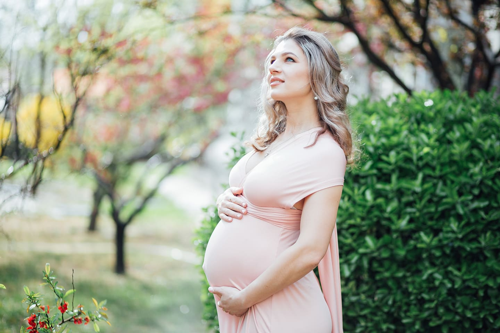
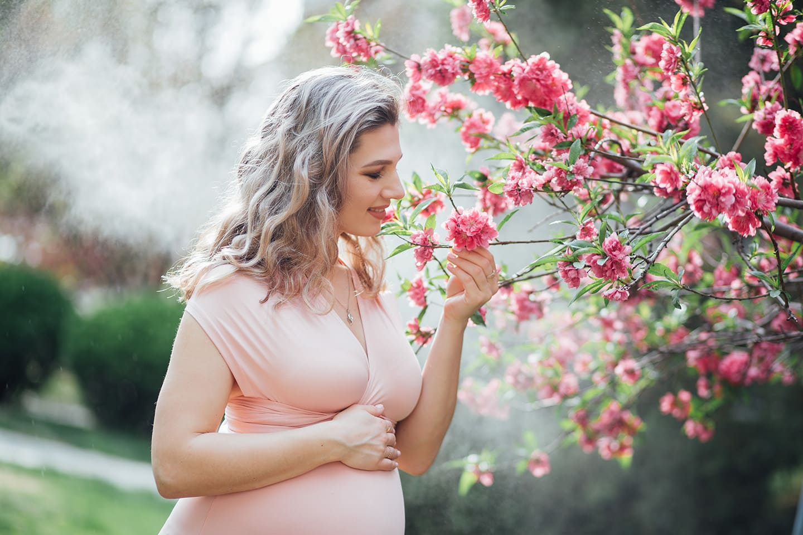
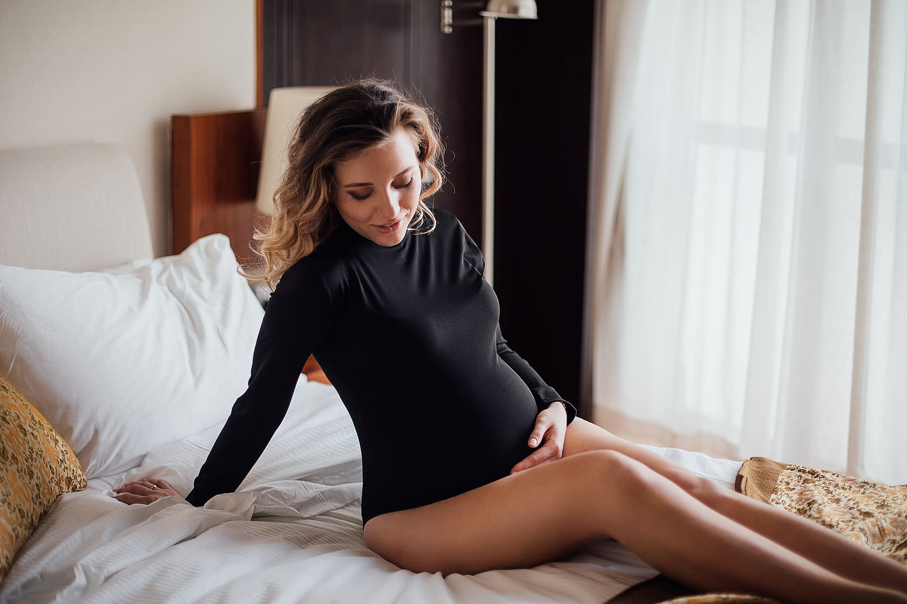
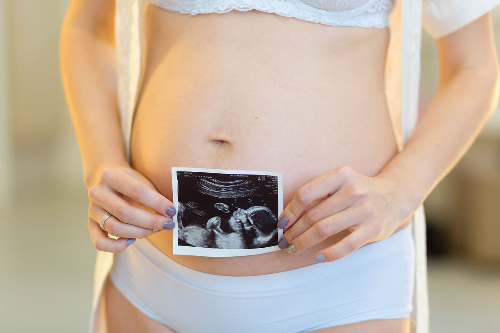
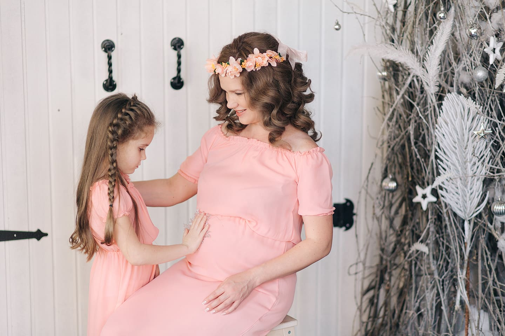
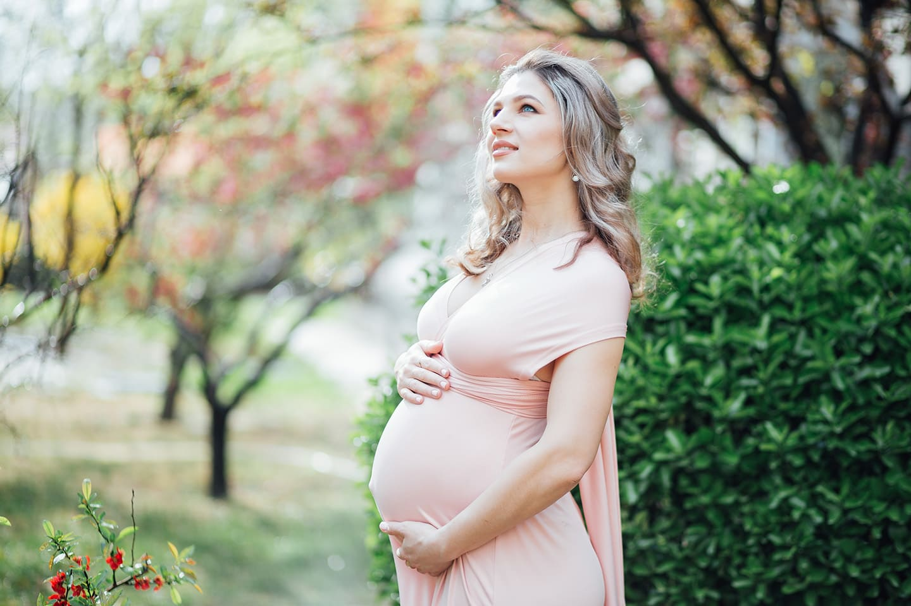
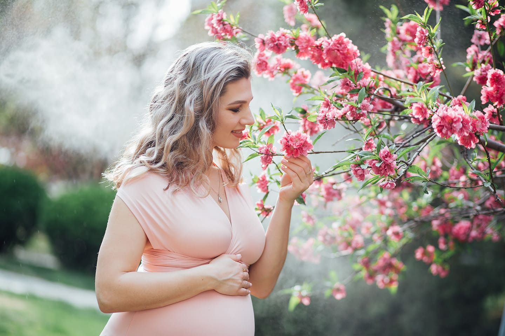
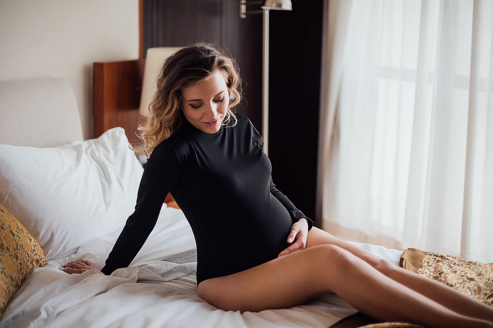
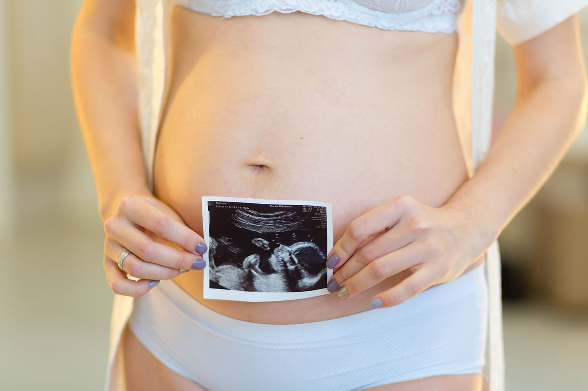
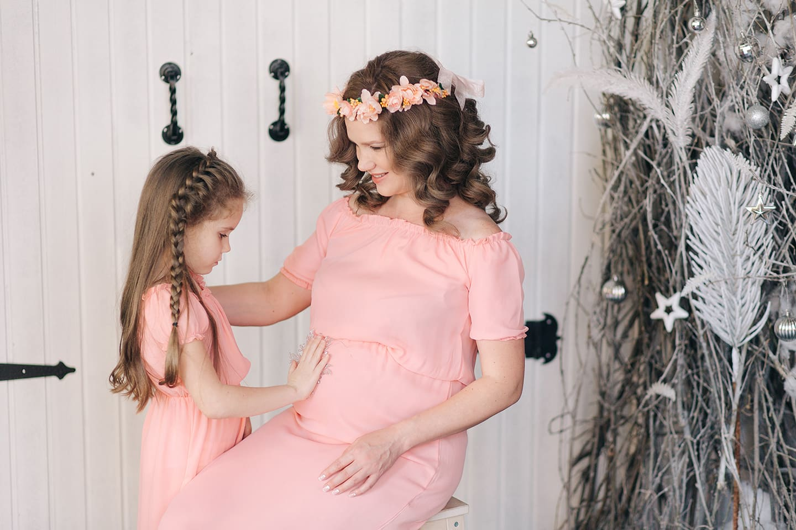

Знакомство с фотографом.
Приглашаю будущих мамочек, на встречу, которая окутана атмосферой уюта и теплоты. В уютном зале мы сможем окунуться в приятную беседу, насладиться закусками и освежиться сладким фруктовым напитком.
Это не просто встреча, это повод познакомиться со мной и другими будущими мамочками, обрести новых друзей, разделить радость ожидания.
Каждая будущая мамочка будет встречена с любовью и заботой. Вы сможете получить 1-2 индивидуальных фото-портрета, а также милый подарок от меня.
Участие в этом мероприятии абсолютно бесплатное, но количество мест ограничено. Поторопитесь, чтобы не упустить возможность стать частью этой незабываемо